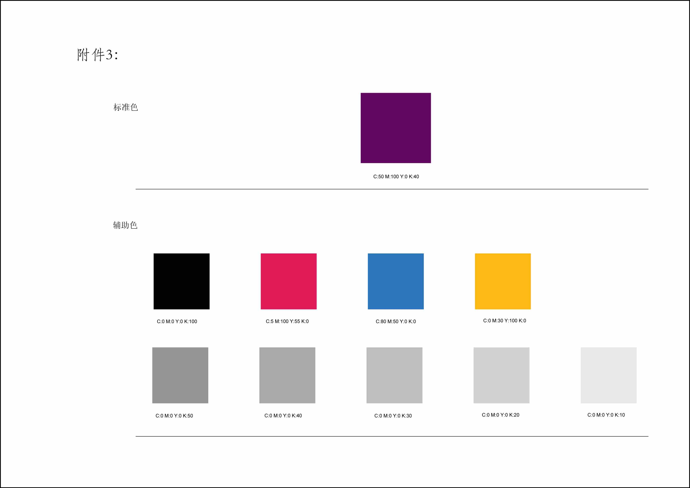
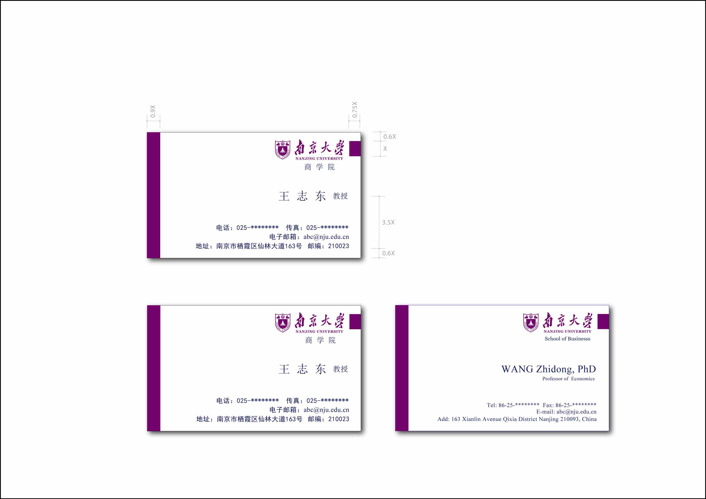
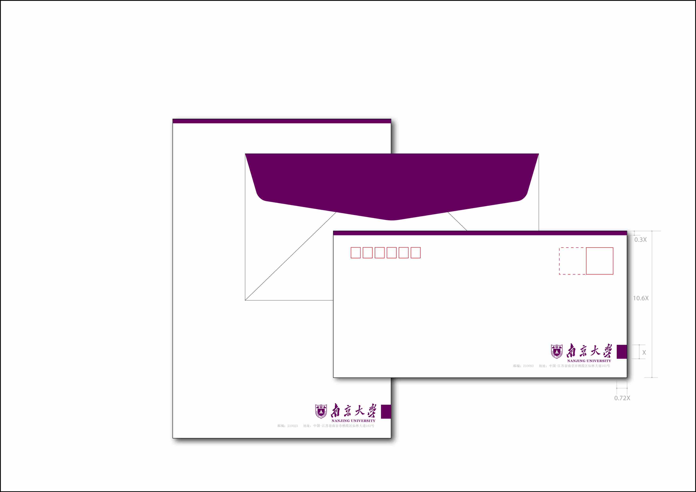
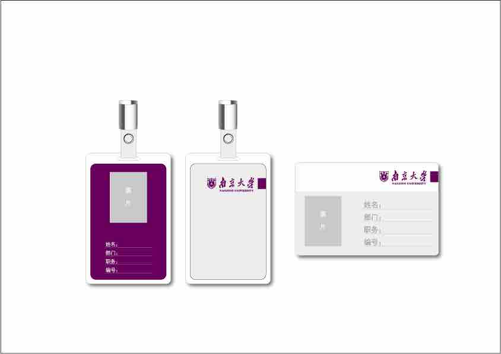
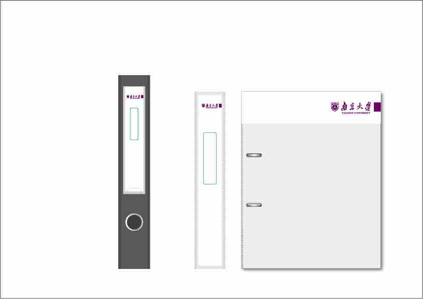
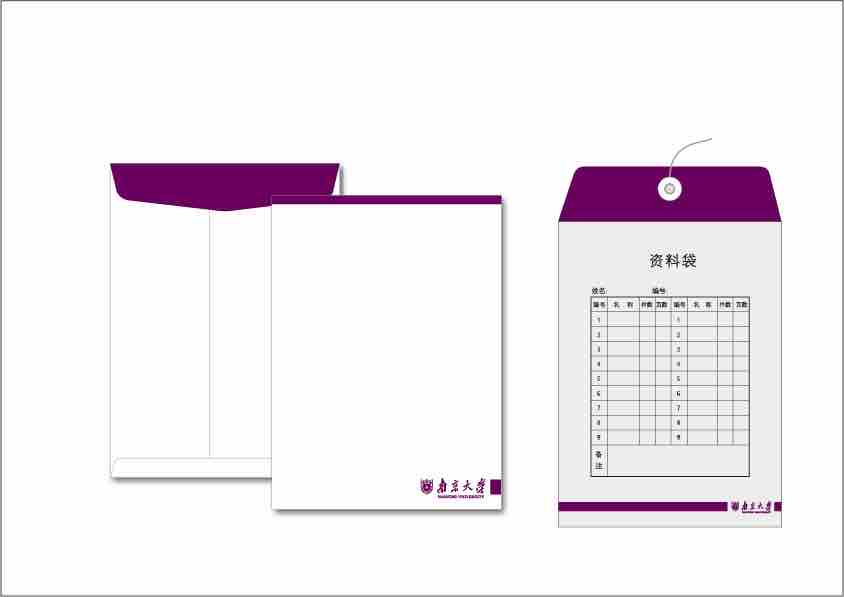
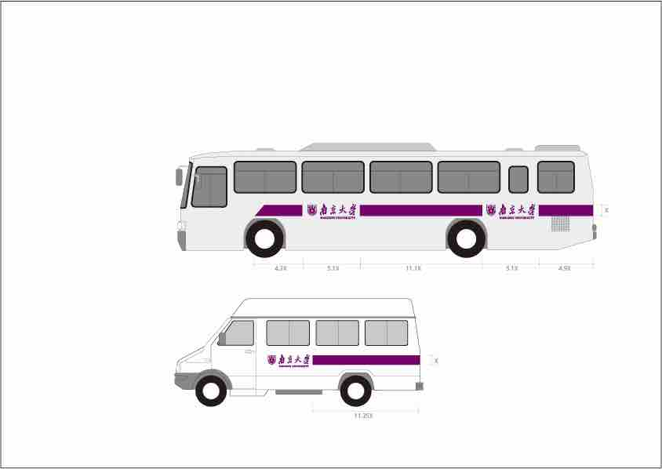

南京大学校标
南京大学校名
南京大学校旗
图像的水平对齐：
 中文名：南大紫；外文名：Nanjing University Purple： 实质：南京大学标准色；色值：C50M100Y0K40 / R106G0B95；启用时间：2011年9月1日 南大紫是南京大学确定的标准色，CMYK色值（C50M100Y0K40）2010年南京大学将紫色作为学校标准色，即“南大紫”。 南京大学在国立中央大学时校色为紫金二色，加之松青，故依据传统当为紫、金、青三色。紫、金两色。 紫色象征典雅、高贵和浪漫；金色象征光明、辉煌和智慧。 南大紫，彰显了南京大学尊重历史、崇尚文化、尊重传统、崇尚科学的精神。 同时紫金山是南京的象征，校庆标识融入“南京元素”，表明了南京大学服务社会、奉献社会的使命意识和担当意识。 紫色是南京大学的标准色，也是南大学生日常生活的主色调，故而有了“南大紫”的说法。
图像的垂直对齐：看起来十分鸡肋，且已经被淘汰，略。
南京大学视觉形象规范化标准：





